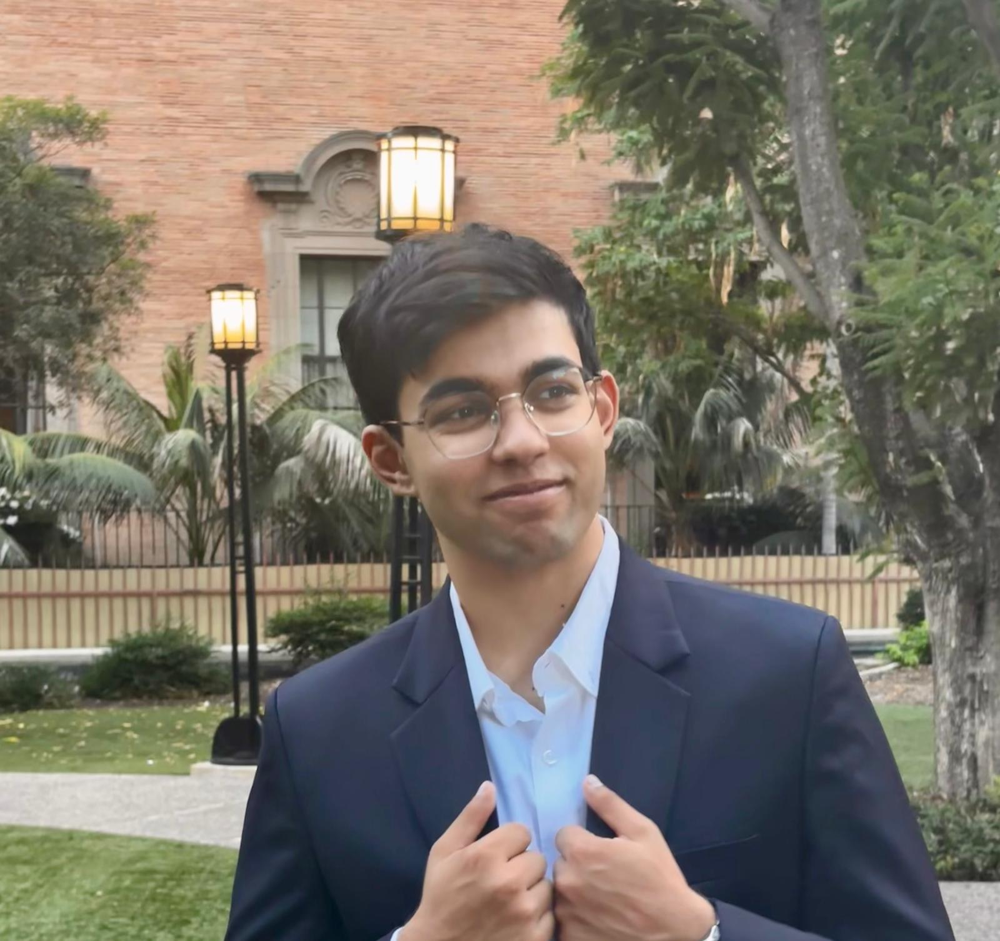

Robotics · Embedded Systems · ECE
Shree
Khangaonkar
Electrical and computer engineering student at USC focused on robotics, embedded electronics, electromechanical integration, and intelligent systems.

Bay Area · Los AngelesEducationB.S. in ECE at USC
Previous experienceRobotics Engineering at Sunnybotics
Current roleElectrical Lead at Terra Labs